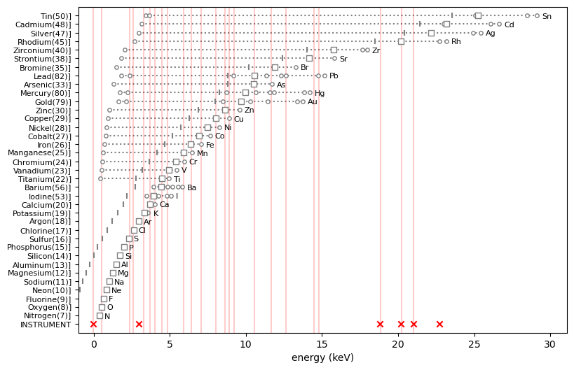
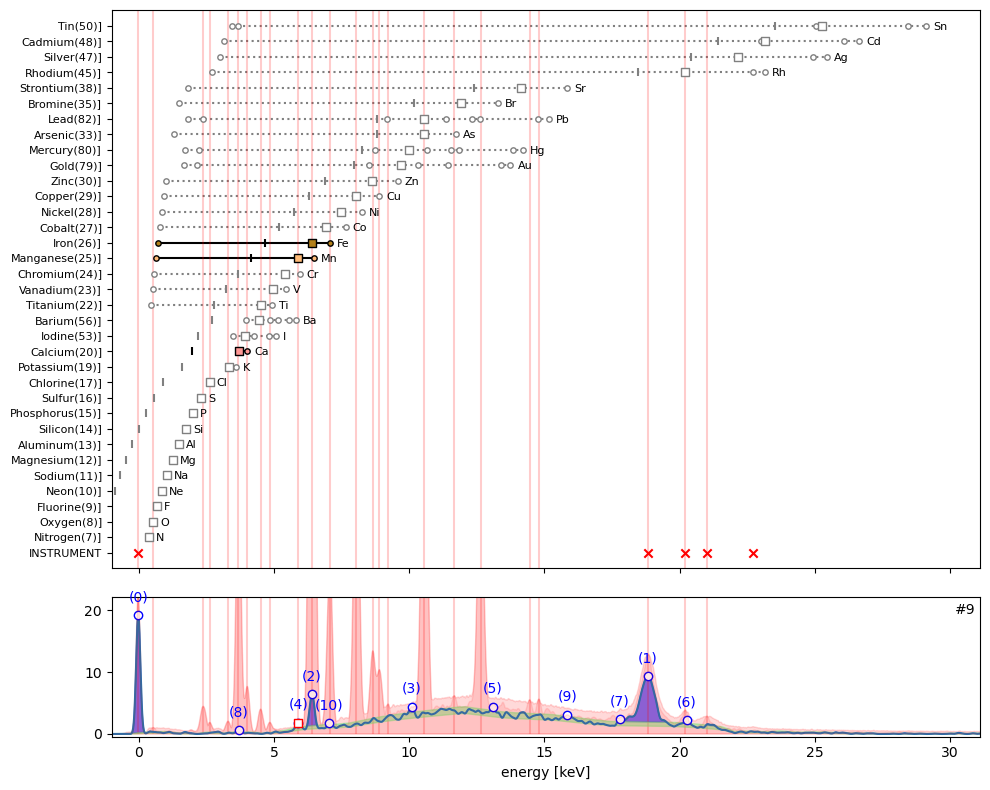

from maxrf4u import EOIThe peak pattern puzzle
Matching peak patterns
We now arrive at the central problem of MA-XRF analysis. Given a spectrum with some peaks, and given the theoretical emission peak patterns for different chemical elements, which chemical elements are present in the sample? This is what I call the peak pattern puzzle.
It is important to note that not all peaks are always due to the actual fluorescence emission of chemical elements present in the scanned object. Other peaks are generated by the instrument itself. And small peaks can also just be noise. Instrument peaks are common to all spectra. For example, the large peak observed in all spectra near zero energy is a result of the instrument detector physics. Other peaks above 18 keV are due emission and subsequent scattering of the rhodium anode present in the x-ray tube.
To simplify our current analysis let’s exclude the light elements and rare elements that we do not expect to detect in drawings. You can inspect the Elements Of Interest by importing EOI. Elements are excluded from the selection with the # sign in front of the chemical symbol. If needed you can add or remove elements by adding or removing the hash sign #.
EOI = ['#H', '#He', '#Li', '#Be', '#B', '#C', 'N', 'O', 'F', 'Ne', 'Na', 'Mg', 'Al', 'Si', 'P', 'S', 'Cl',
'#Ar', 'K', 'Ca', '#Sc', 'Ti', 'V', 'Cr', 'Mn', 'Fe', 'Co', 'Ni', 'Cu', 'Zn', '#Ga', '#Ge', 'As',
'#Se', 'Br', '#Kr', '#Rb', 'Sr', '#Y', '#Zr', '#Nb', '#Mo', '#Tc', '#Ru', 'Rh', '#Pd', 'Ag', 'Cd',
'#In', 'Sn', '#Sb', '#Te', 'I', '#Xe', '#Cs', 'Ba', '#La', '#Hf', '#Ta', '#W', '#Re', '#Os', '#Ir',
'#Pt', 'Au', 'Hg', '#Tl', 'Pb', '#Bi', '#Po', '#At', '#Rn', '#Fr', '#Ra', '#Ac', '#Rf', '#Db', '#Sg',
'#Bh', '#Hs', '#Mt', '#Ds', '#Rg', '#Cn', '#Nh', '#Fl', '#Mc', '#Lv', '#Ts', '#Og']Now to start analyzing our peak pattern puzzle you first need to import and instantiate the Peak_Pattern_Atlas() class. You need to provide the datastack_file= option to include the instrument pattern in the atlas. Much should be said about the excitation energy tube_keV. However I can not elaborate on this topic now.
from maxrf4u import Peak_Pattern_Atlasppa = Peak_Pattern_Atlas(elements_of_interest=EOI, datastack_file='RP-T-1898-A-3689.datastack', tube_keV=30)Please wait while initializing peak pattern atlas...To activate interactive plotting you need to execute the notebook magic command:
%matplotlib widgetIf it turns out that during your analysis you need to adjust your list of elements of interest you can include or exclude elements with the Peak_Pattern_Atlas.update() method.
ppa.update_eoi(['Zr', 'Ar'])ppa.plot_patterns()
In the previous section, out of one million spectra, we have cherry picked 22 hotmax spectra and within each spectrum detected potentially significant peaks exceeding the Poisson noise level. We can now proceed to solve the peak pattern puzzle for each hotmax spectrum. In other words, for each spectrum explain the presence of each significant (numbered) peak. Can we attribute a given peak to a specific chemical element, the instrument or noise?
In other words, we can start to ‘explain away’ all peaks. It is highly instructive to walk through some interesting hotmax spectra and see which element patterns explain the peak patterns that we observe. To do so you can use the Peak_Pattern_Atlas.plot_puzzle() method with the select_elems= keyword argument.
Exploring the peak pattern puzzle for each hotmax spectrum
ppa.plot_puzzle(0, select_elems=['Ca'])In the puzzle plot for hotmax spectrum #0 above, beside instrument peaks, all other peaks are rather small. I would say that only sub peak (4) can be explained as the \(K_{\alpha}\) emission of calcium.
ppa.plot_puzzle(1, select_elems=['O', 'Ca'])ppa.plot_puzzle(2, select_elems=['Pb', 'Fe'])In hotmax spectrum #2 above, one can see that sub peaks (0), (1), (3) and (6) can all be explained by the emission of lead (Pb). The tiny peaks (8) and (9) are explained by respectively iron (Fe) and calcium (Ca).
ppa.plot_puzzle(3, select_elems=['Ca', 'Fe', 'Cl', 'Zn'])In hotmax spectrum #3 sub peak (3) interestingly indicates the presence of chlorine (Cl). Furthermore we find evidence for calcium (Ca), iron (Fe), and perhaps zinc (Zn).
ppa.plot_puzzle(4, select_elems=['Ca', 'K', 'S'])ppa.plot_puzzle(5, select_elems=['Ca'])ppa.plot_puzzle(6, select_elems=['Ca'])ppa.plot_puzzle(7, select_elems=['Ca', 'Ti', 'Fe'])ppa.plot_puzzle(8, select_elems=['Ti', 'Ba', 'Fe'])ppa.plot_puzzle(9, select_elems=['Mn', 'Fe', 'Ca'])
ppa.plot_puzzle(10, select_elems=['Fe', 'Ca'])The tiny peak (6) in hotmax spectrum #10 is clearly the escape peak for Fe located at 6.40 keV minus 1.74 keV.
ppa.plot_puzzle(11, select_elems=['Fe', 'Ca'])ppa.plot_puzzle(12, select_elems=['Cu', 'Zn', 'Ca'])ppa.plot_puzzle(13, select_elems=['Pb'])ppa.plot_puzzle(14, select_elems=['Pb', 'Fe', 'Ca'])plt.close('all')ppa.plot_puzzle(15, select_elems=[])ppa.plot_puzzle(16, select_elems=['Pb'])ppa.plot_puzzle(17, select_elems=[])ppa.plot_puzzle(18, select_elems=['Pb', 'Fe'])ppa.plot_puzzle(19, select_elems=['Ca', 'Zn'])ppa.plot_puzzle(20, select_elems=['Ca'])ppa.plot_puzzle(21, select_elems=['Ca', 'Cl'])ppa.contains_dict{5: ['Ca'],
0: ['Ca'],
1: ['O', 'Ca'],
2: ['Pb', 'Fe'],
3: ['Ca', 'Fe', 'Cl', 'Zn'],
4: ['Ca', 'K', 'S'],
6: ['Ca'],
7: ['Ca', 'Ti', 'Fe'],
8: ['Ti', 'Ba', 'Fe'],
9: ['Mn', 'Fe', 'Ca'],
10: ['Fe', 'Ca'],
11: ['Fe', 'Ca'],
12: ['Cu', 'Zn', 'Ca'],
13: ['Pb'],
14: ['Pb', 'Fe', 'Ca'],
15: [],
16: ['Pb'],
17: [],
18: ['Pb', 'Fe'],
19: ['Ca', 'Zn'],
20: ['Ca'],
21: ['Ca', 'Cl'],
22: None}Ok, that is it. Let’s summarize which chemical elements we found in our MA-XRF data cube.
Summary
Code
import matplotlib.pyplot as plt
from maxrf4u import DataStackCode
ds = DataStack('RP-T-1898-A-3689.datastack')
x_keVs = ds.read('maxrf_energies')
y_max = ds.read('maxrf_maxspectrum')found_elems = ['S', 'Ca', 'K', 'Cl', 'Fe', 'Mn', 'Cu', 'Zn', 'Pb', 'Ti', 'Ba']
ppa.plot_patterns(select_elems=found_elems)Altogether the spectral data indicates that 11 chemical elements are present in the Susanna drawing: sulfur (S), chlorine (Cl), potassium (K), calcium (Ca), barium (Ba), titanium (Ti), manganese (Mn), iron (Fe), copper (Cu), zinc (Zn) and lead (Pb).
In the next section we will look into the spatial distribution of these elements…
FUNCTIONS
atomnums_from_elems
def atomnums_from_elems(
elements
):
Convenience function to convert list of elements into atomic numbers.
Needed because zarr format 3 can not handle strings (yet).
Returns: atomnums
elems_from_atomnums
def elems_from_atomnums(
atomnum_list
):
Convenience function to convert integer list atomnum_list into chemical symbols.
Needed because zarr format 3 can not handle strings (yet).
Returns: elements
update_eoi
def update_eoi(
elements_of_interest, add_elems
):
Update elements_of_interest list for elements list add_elems.
For example: add_elems=[‘#Al’, ’Ga]
get_instrument_pattern
def get_instrument_pattern(
datastack_file
):
Generate instrument peak pattern.
Pattern dictionary contains strongest Rhodium anode emission peaks,
their corresponding Compton shifted peaks, and a sensor peak
Returns: instrument_pattern_dict
colorize
def colorize(
elem
):
Pick fixed color from nice color map for elements of interest.
get_eoi_patterns
def get_eoi_patterns(
elements_of_interest, tube_keV:int=40
):
Create a list of xrf spectrum pattern dictionaries for all elements_of_interest.
Hashed (#) elements are excluded from the list.
Returns eoi_ptrns dictionary list.
plot_patterns
def plot_patterns(
eoi_ptrns, select_elems:NoneType=None, instrum_ptrn:NoneType=None, ax:NoneType=None
):
Wrapper function to plot overview of element patterns elem_ptrns and instrument patterns in axes ax.
Returns: ax
Peak_Pattern_Atlas
def Peak_Pattern_Atlas(
elements_of_interest:NoneType=None, tube_keV:int=40, datastack_file:NoneType=None, verbose:bool=True
):
Compute atlas of peak patterns for all elements_of_interest.